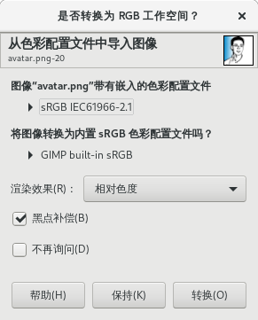

➡图像导入和导出
GIMP在导入或导出图像文件时，会有一些默认的设置，这些默认设置可以在这里修改。
首选项⇨图像导入和导出
将导入的图像提升为浮点精度
默认情况下，GIMP导入文件时使用的精度为：8位整数 + 感官性伽马。勾选此项后，GIMP导入文件时使用的精度为：32位浮点 + 线性光。驿窗注：
这里提到的“导入文件”，也包括打开文件。重点是，XCF格式的文件，打开时不会受此选项影响，所以不会改变图像精度；XCF格式以外的其它格式文件，打开时则会受此选项的影响而改变精度。
提升为浮点时对图像递色
在把图像精度提升为“32位浮点+线性光”的同时，应用“递色”功能：添加最小数值的噪点，以便使色彩更分散。
为导入的图像添加一个透明通道
导入图像的同时，给图像添加一个alpha通道。
特性文件(色彩配置文件)方案
此选项用来告诉GIMP如何处理图像文件中内嵌的特性文件。
询问做什么：选择此项后，GIMP在打开有内嵌特性文件的图像时，会提示图像带有嵌入的特性文件，并请您确定是否进行转换。如果不做任何调整，直接关闭询问对话框，GIMP会保留内嵌的特性文件不做转换处理，等同于“保持内嵌的特性文件(配置文件)”。
 保持内嵌的特性文件(配置文件)：保留图像文件自身内嵌的特性文件，不做转换。
转换为内置sRGB或灰阶特性文件(配置文件)：不保留图像文件自身内嵌的特性文件，转换为GIMP内置的特性文件：如果原图像文件是RGB模式，那么会转换为GIMP built-in sRGB；如果原图像是灰度模式，那么会转换为GIMP built-in D65 Grayscale with sRGB TRC 。
导出方案
GIMP导出文件时是否一并导出特性文件和三种元数据。
这里的设置，优先级要低于文件⇨导出为➡导出对话框的优先级。
默认导出文件类型
可以设置默认导出的文件格式。
驿窗注：
关于各种文件格式，请参考GIMP平面基础 。
Raw图像导入
默认情况下GIMP无法打开RAW文件，您需要通过第三方工具或插件才可以打开RAW文件，比如darktable、rawtherapee，或者ufraw。